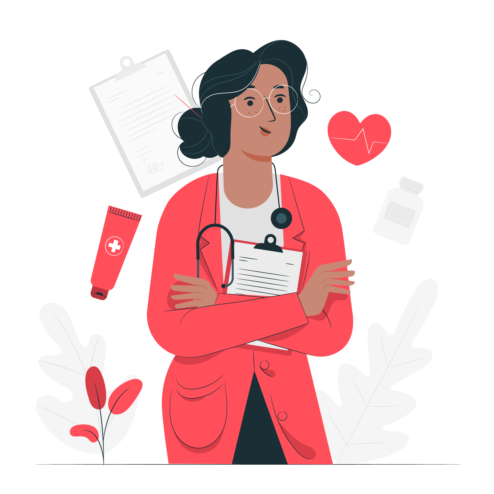

Welcome
CMS explained that concern about text messages in healthcare was not just about transmission security. There was the potential for a lack of access controls on the senders' and receivers' devices, stored data may not necessarily be secure and encrypted, and the privacy of the patients is not guaranteed. Another concern was information transmitted via text messages also needs to be entered into the patient record and made available for retrieval.


About Us
CMS explained that concern about text messages in healthcare was not just about transmission security. There was the potential for a lack of access controls on the senders' and receivers' devices, stored data may not necessarily be secure and encrypted, and the privacy of the patients is not guaranteed. Another concern was information transmitted via text messages also needs to be entered into the patient record and made available for retrieval.
Coronavirus Preventions
- Wash your hands
- Use an alcohol-based hand sanitizer
- Cover your cough
- Avoid contact with sick people
- Avoid touching your eyes, nose and mouth
- Disinfect frequently touched objects


Health Care Advice Anytime
If the patient suffered a major negative health event, are you responsible if you were unable to respond at that time? Subscribe.

Ask a Doctor
Technology such as email and text can be an incredibly powerful tool in medicine. I communicate with colleagues and with consultants.
.jpg)
Health Resources
Allowing access during time at home with family and during weekends and holidays may also reduce even further a physician's "downtime".